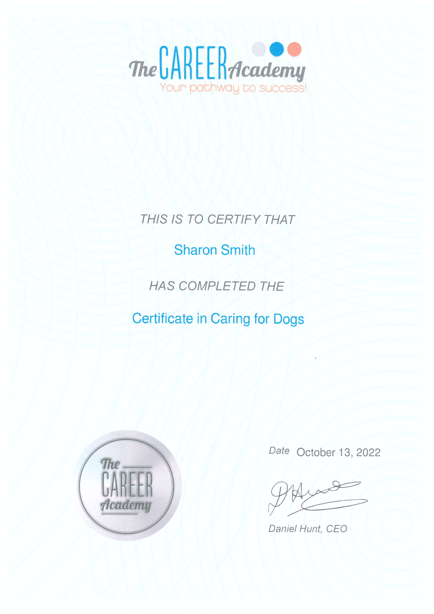
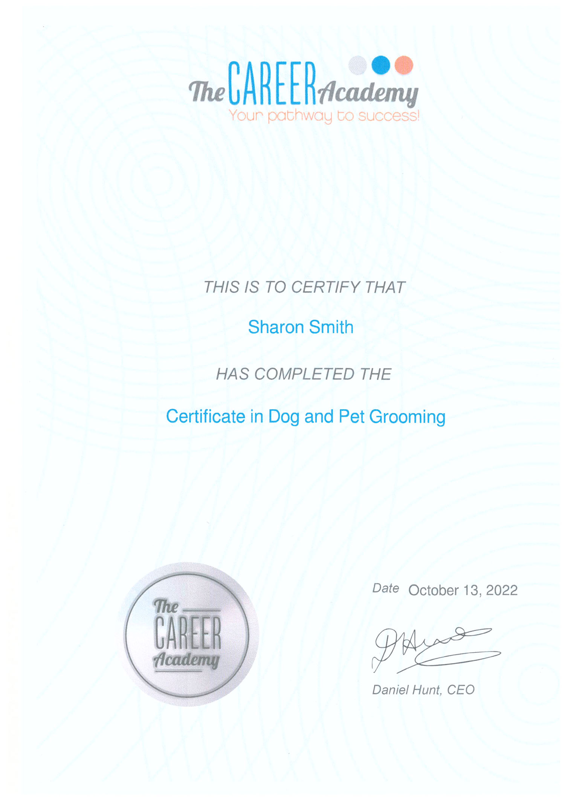
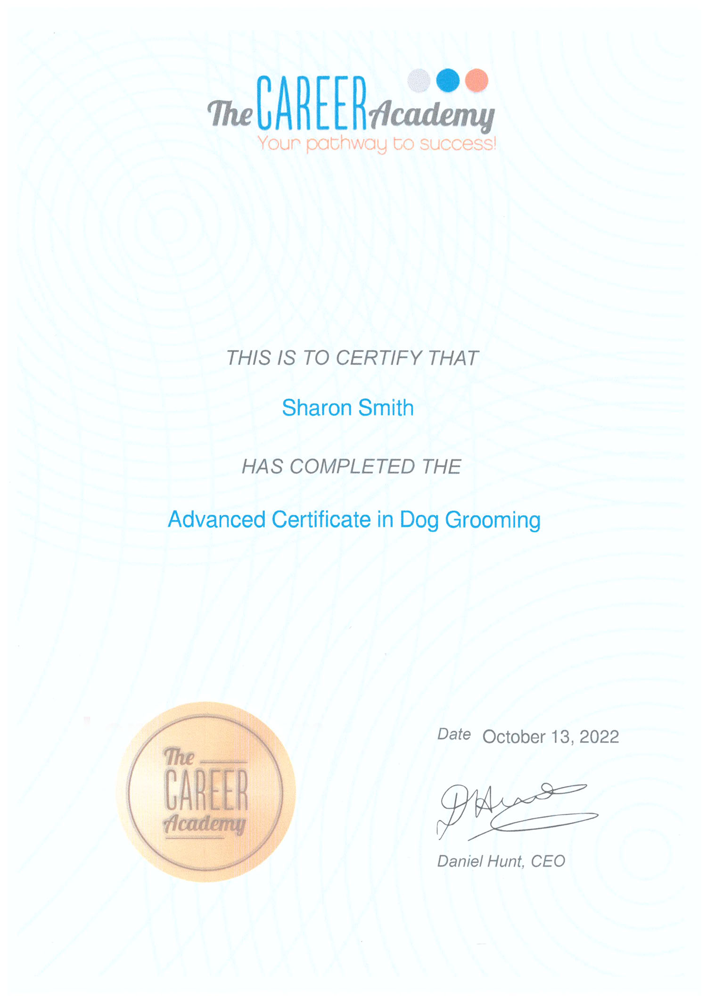
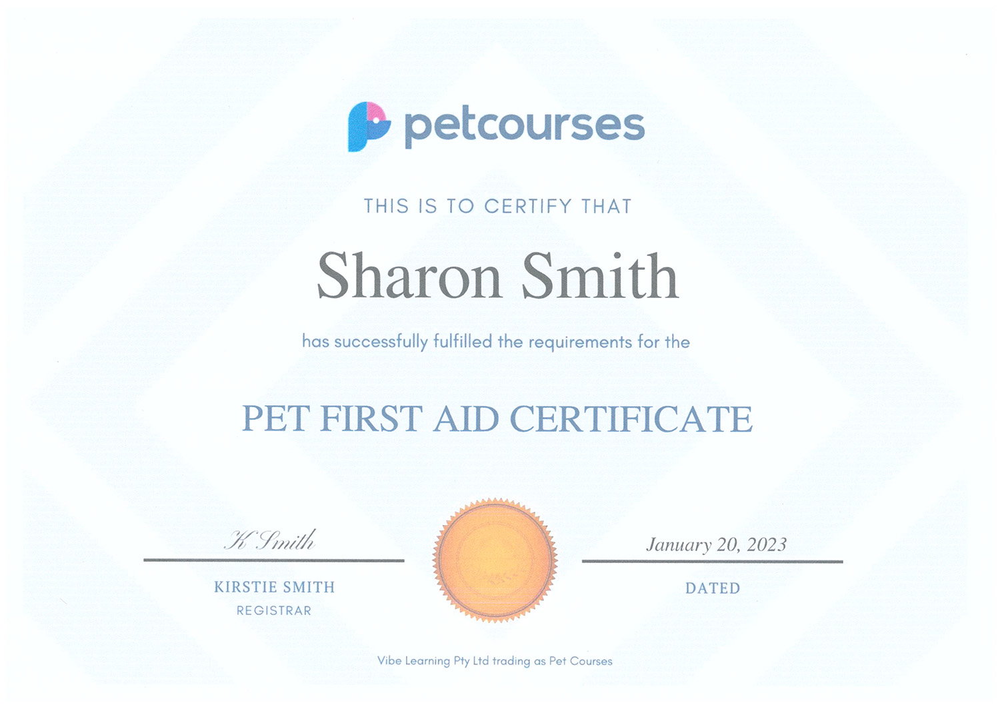
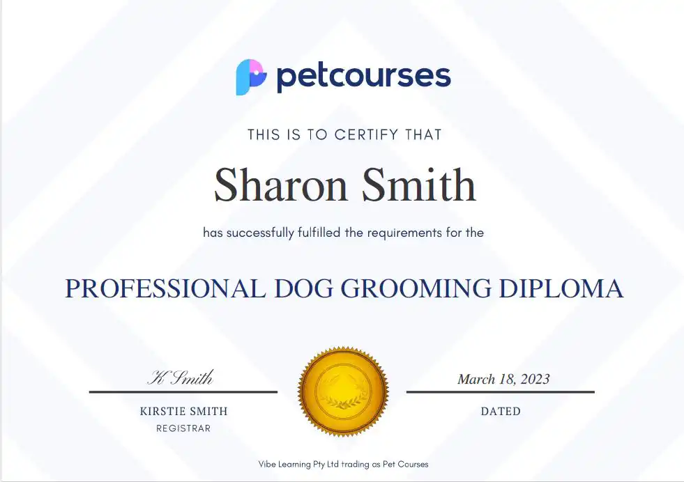

Hi, I'm Sharon Smith

I have had 12 experience in the dog grooming industry.
I worked for 6 years as a bather for an experienced professional dog groomer who taught me many grooming techniques as well as clipping and styling of different breeds of dogs.
I had been grooming dogs for my friends for years and, 4 years ago, decided to branch out.
So I purchased a mobile dog grooming trailer and started grooming professionally.
I also decided to take some courses in dog grooming
My aim is to keep your dog looking great but, more than that, to keep them happy while being groomed.
My dog grooming Qualifications
Caring for dogs
In this course I learned about the kindest and best ways to care for all companion animals. Having been an animal lover and owner all my life I already had a good understanding of them but wanted to formalize my knowledge. This course was great for this purpose.
One of the very best things I learnt in this course was the availability of natural, chemical free grooming products.
I now use only natural products on your dog.

Dog and pet grooming
As a refresher to all of my years working in a grooming salon, I decided to update my technical knowledge.
This was a good choice as it not only freshened up my past knowledge but gave me up to date information on the latest techniques and practices in dog grooming.
From the best equipment to use, through clipping methods and hygiene practices, to nail trimming, this course covered all the basics.
But I wanted more than the basics, so progressed to the next level.

Advanced dog grooming
This was the information I really wanted to enable me to offer my clients more specialised services.
Dog owners all have their specific likes and dislikes when it comes to grooming their dogs (as well as everything else relating to these special companions).
Traditional breeds already have established standards for how they should be groomed.
However, newer cross breeds don’t yet have these standards and I wanted to get ideas as to how to go about grooming these dogs.
This course answered these needs.

A little extra

and, finally, a Diploma!
